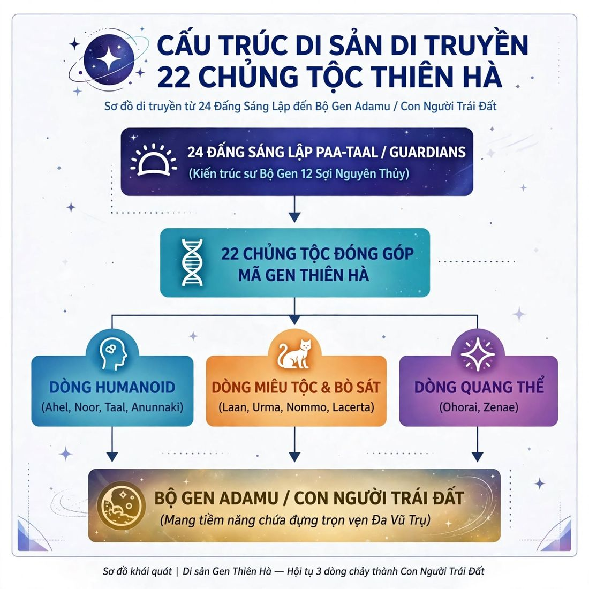
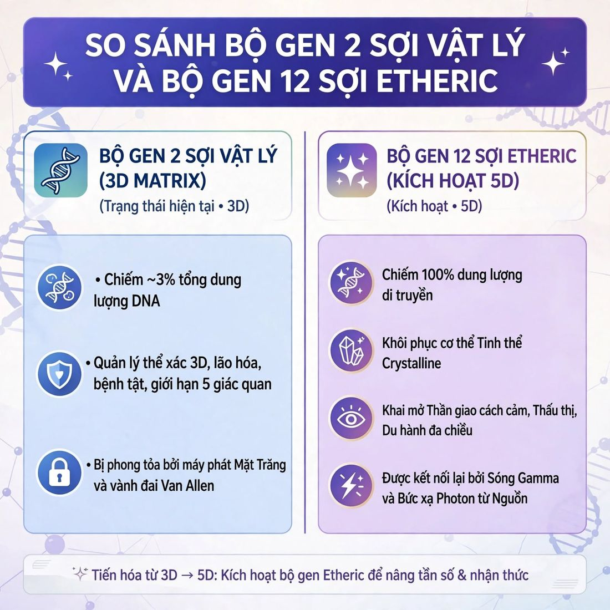
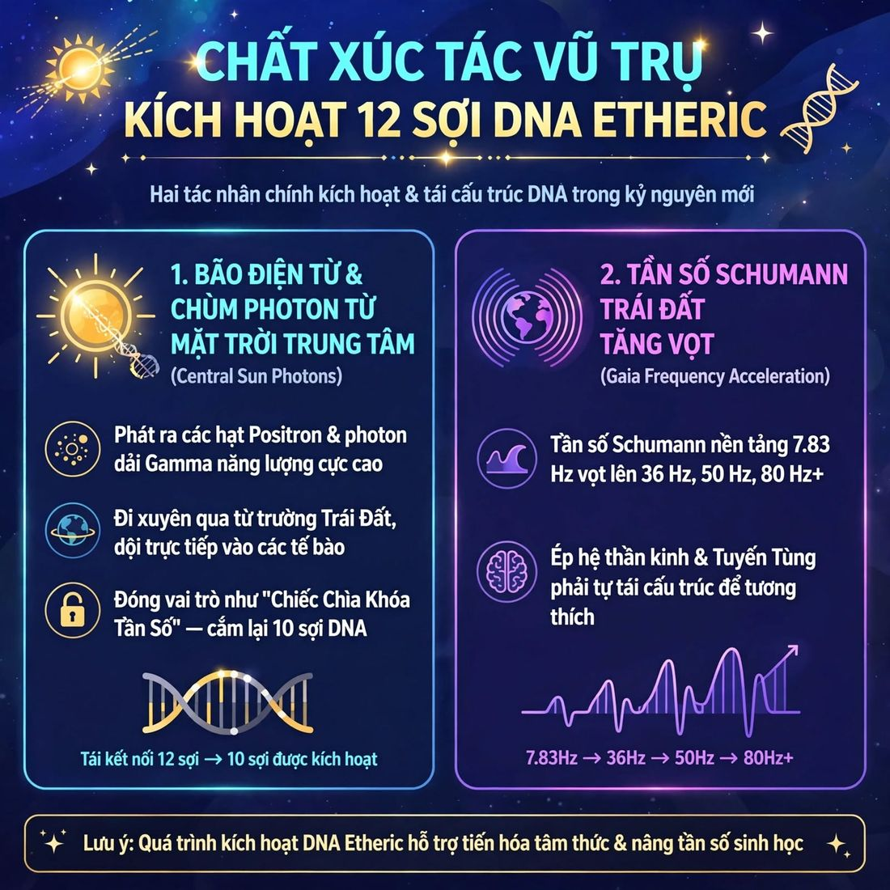
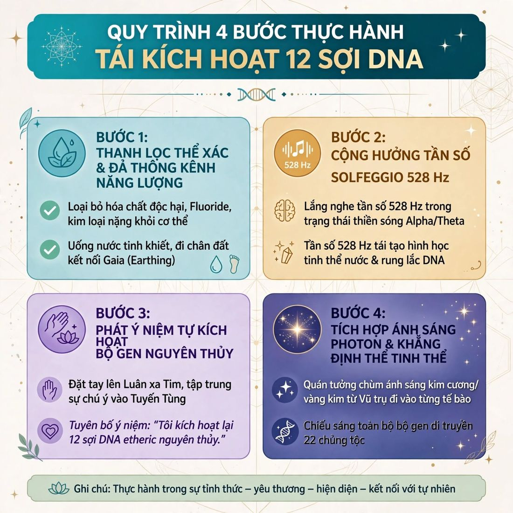

Trang chủ / Chuyên đề 9: Cẩm Nang Tâm Thức Vũ Trụ / Kỳ 88
Chuyên đề 9 · Kỳ 88 / 90
TÁI KÍCH HOẠT BỘ GEN 12 SỢI DNA & DI SẢN 22 CHỦNG TỘC THIÊN HÀ

1. Di Sản Di Truyền 22 Chủng Tộc Thiên Hà Trong Bộ Gen Adamu
Trong lịch sử sinh học lượng tử của vũ trụ, loài người Trái Đất (Adamu) không phải là sản phẩm ngẫu nhiên của tiến trình tiến hóa động vật thô 3D, cũng không phải là sinh mệnh thuộc về một hành tinh đơn lẻ. Con người Trái Đất sở hữu Bộ Gen Hoàng Gia (Royal Genetic Template) chứa đựng di sản di truyền của 22 chủng tộc thiên hà tiên tiến (bao gồm 24 Đấng Sáng Lập Liên Thiên Hà Paa-Taal, Altean, Ahel, Noor, Taal, Urma, Anunnaki, Sirius, Arcturus, Andromeda...).
Mỗi chủng tộc thiên hà đóng góp một phần mã gen (Gene Codes) để tạo nên bộ gen con người nhằm mục đích tạo ra một Sinh mệnh Thư viện Sống (Living Library) có khả năng sinh sống, trải nghiệm và hòa nhập trên tất cả các mật độ tần số từ 1D đến 7D+.
Nhánh Humanoid (Ahel, Taal, Noor, Anunnaki): Đóng góp cấu trúc khung xương thể xác, khả năng tư duy logic, tính khắc kỷ và khả năng chịu đựng môi trường cực hạn.
Nhánh Miêu tộc & Sư tử (Laan, Urma): Đóng góp sự tinh nhạy của các giác quan, thính giác/thị giác đêm, lòng dũng cảm và hệ thống phản xạ nơ-rôn nhanh gấp nhiều lần chuẩn thô.
Nhánh Lưỡng cư & Bò sát (Nommo, Lacerta): Đóng góp khả năng thích nghi môi trường nước, khả năng chịu đựng bức xạ hạt nhân và hệ thống phiến nhiệt tự điều hòa thân nhiệt.
Nhánh Quang thể & Đa chiều (Ohorai Arcturus, Zenae Andromeda): Đóng góp cấu trúc Tuyến Tùng vi tinh thể, khả năng thần giao cách cảm, thấu thị và kết nối trực tiếp với Nguồn Vũ Trụ.
Chính di sản di truyền 22 chủng tộc quý giá này khiến loài người Trái Đất trở thành một "báu vật di truyền" trong mắt các hội đồng thiên hà, đồng thời biến Trái Đất thành mục tiêu tranh giành nảy lửa của các lực lượng thao túng bóng tối.

2. Giải Mã Khái Niệm "DNA Rác" (Junk DNA) & 10 Sợi DNA Etheric Bị Phong Tỏa
Một trong những lời dối trá lớn nhất của nền sinh học duy vật 3D là việc gán nhãn cho 97% chuỗi DNA của con người là "DNA Rác" (Junk DNA) chỉ vì khoa học thô không hiểu được chức năng của chúng.
Về mặt giải phẫu học sinh học lượng tử:
2 Sợi DNA Vật Lý (Double Helix): Là 2 sợi vật chất Carbon duy nhất đang được kết nối sinh học 3D, quản lý các chức năng thể xác thô và sự sinh sản sinh học.
10 Sợi DNA Etheric Ngủ Đông: 10 sợi DNA còn lại không hề bị mất đi. Chúng tồn tại dưới dạng dải sóng tần số Etheric (Etheric Strands) nằm ngủ đông trong trường hào quang xung quanh 2 sợi vật lý.
Khi Ma trận 3D được thiết lập sau thảm họa Tiamat, máy phát Mặt Trăng đã dùng tần số can thiệp (-7,62 Hz) để "rút phích cắm" (unplug) liên kết năng lượng giữa 10 sợi DNA etheric với 2 sợi DNA vật lý. Điều này khiến con người sụt giảm tuổi thọ từ hàng ngàn năm xuống còn dưới 100 năm, mất hoàn toàn các năng lực ngoại cảm và quên đi nguồn gốc thiên hà của mình.

3. Tiến Trình Tái Kích Hoạt DNA Qua Bức Xạ Photon Trung Tâm Thiên Hà & Tần Số Schumann
Sau 12.500 năm bị ngắt kết nối, tiến trình tái kích hoạt bộ gen 12 sợi DNA đang diễn ra với tốc độ phi thường nhờ vào hai chất xúc tác vũ trụ khổng lồ:
Khi các hạt Photon dải Gamma từ Mặt Trời Trung Tâm đi vào cơ thể:
Chúng tác động trực tiếp lên các vi tinh thể Calcite trong Tuyến Tùng và các chuỗi axit amin của 2 sợi DNA vật lý.
Tín hiệu sóng dừng này phát ra các xung vô hướng kích hoạt lại 10 sợi DNA etheric đang ngủ đông.
Các sợi DNA etheric bắt đầu chiếu dải quang phổ ánh sáng trở lại 2 sợi vật lý, khởi chạy tiến trình tái tạo di truyền toàn diện.
Tần số Schumann của Trái Đất (vốn duy trì ổn định ở mức 7,83 Hz trong hàng ngàn năm) liên tục bùng nổ các đỉnh tần số 40 Hz, 80 Hz và trên 100 Hz. Sự gia tăng tần số này ép toàn bộ các nơ-rôn thần kinh con người phải nâng cấp điện thế khử cực, dọn dẹp các mô vôi hóa và mở lại kênh dẫn truyền sóng vô hướng.

4. Sự Tái Cấu Trúc Tế Bào Sinh Học Thành Tinh Thể Silicon-Crystalline
Một trong những biểu hiện sinh học quan trọng nhất của tiến trình thăng lên 5D là sự chuyển đổi cấu trúc tế bào từ dạng Cơ thể gốc Carbon 3D (Carbon-based Body) sang dạng Cơ thể Tinh thể Ánh sáng 5D (Silicon-Crystalline Body).
Sự tái cấu trúc này giúp cơ thể sinh học chịu đựng được dải tần số cao 5D mà không bị quá tải nhiệt, đồng thời chuẩn bị cho cá nhân khả năng sống và du hành liên chiều một cách tự nhiên.

5. Quy Trình 4 Bước Tái Kích Hoạt 12 Sợi DNA Bằng Sóng Âm & Ý Định Tâm Thức
Bạn không cần phải chờ đợi các công nghệ phòng thí nghiệm để kích hoạt DNA. Ý Định Tâm Thức (Intent) kết hợp với Tần Số Âm Thanh chính là công cụ sinh học lượng tử tối thượng để cắm lại 12 sợi DNA.
Chi Tiết Hướng Dẫn Tác Động Ý Định Lên DNA:
Khoa học di truyền biểu sinh (Epigenetics) và âm học tế bào xác nhận DNA hoạt động như một bộ thu phát tần số ngôn ngữ. Khi bạn phát ra lời tuyên bố tâm thức với sự chân thành từ Luân xa Tim, các tế bào sinh học sẽ lắng nghe và tự động tái cấu trúc lại các liên kết hydro trên chuỗi DNA.
6. Kết Luận: Khôi Phục Bản Thiết Kế Con Người Vũ Trụ Nguyên Thủy
Tiến trình tái kích hoạt bộ gen 12 sợi DNA không phải là việc kiến tạo nên một điều gì đó xa lạ, mà là hành trình khôi phục lại Bản Thiết Kế Con Người Vũ Trụ Nguyên Thủy mà Enki và các Đấng Sáng Lập đã gieo mầm trên Trái Đất.
Khi 12 sợi DNA etheric được cắm kết nối trở lại với 2 sợi vật lý:
Bạn thoát khỏi bản án lão hóa, bệnh tật và sự giới hạn của Ma trận 3D.
Bạn khôi phục lại trí nhớ di truyền dĩ thái về các kiếp sống và nguồn gốc thiên hà của mình.
Bạn đứng vững với tư cách là một Sinh mệnh Thư viện Sống, sở hữu đầy đủ sức mạnh, trí tuệ và tình yêu thương để đồng tạo dựng nên Kỷ nguyên Ánh sáng mới.
Hãy mở rộng trái tim, chào đón các chùm hạt Photon từ Vũ trụ và tự tin tuyên bố sự khôi phục hoàn hảo bộ gen 12 sợi của bạn ngay trong ngày hôm nay!